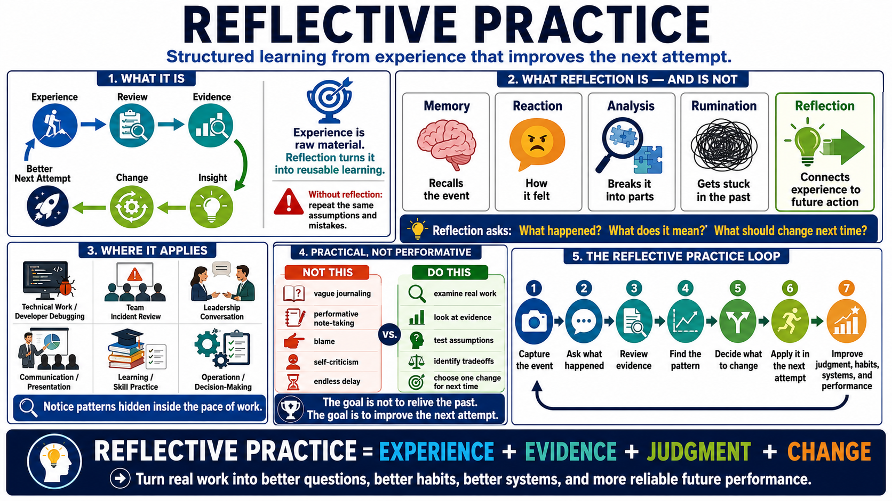

What Is Reflective Practice?
Connecting to LMS... Progress: in progress

Narration
Reflective practice is structured learning from experience. It is the deliberate habit of looking at real work, asking what happened, examining the evidence, and deciding what should change next time. Experience gives raw material, but reflection turns that material into reusable learning. Without reflection, a person can repeat the same activity many times while carrying forward the same assumptions and mistakes.
Reflection is different from memory, reaction, analysis, and rumination. Memory recalls an event. Reaction expresses how the event felt. Analysis breaks the event into parts. Reflection connects the event to future action. It asks what the experience reveals about decisions, assumptions, context, tradeoffs, skills, systems, and behavior. The purpose is not to relive the past; it is to improve the next attempt.
Reflective practice matters in technical work, learning, leadership, communication, incident response, and skill development. A developer can reflect on a debugging session. A team can reflect after an incident. A leader can reflect after a difficult conversation. A learner can reflect after practice. In each case, the point is to notice patterns that would otherwise remain hidden inside the pace of work.
This course treats reflection as practical and non-clinical. It is not vague journaling, performative note-taking, blame, or self-criticism. It is also not a reason to delay action forever. The goal is to turn real work into reusable learning: better questions, better judgment, better habits, better systems, and more reliable future performance.